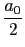
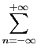

suivant: fourier_an
monter: Transformée de Fourier
précédent: Transformée de Fourier
Table des matières
Index
Les coefficients de Fourier : fourier_an et fourier_bn ou fourier_cn
Si la fonction f est continue par morceaux sur
 , et est
périodique de période T, alors aux points de continuité de f on a :
, et est
périodique de période T, alors aux points de continuité de f on a :
f (
x) =  +
 an
ancos(

) +
bnsin(
)
ou
f (
x) = 
cne
2
i nxT
nxT
où les coefficients an, bn, n  N, (ou cn, n Z) sont les
coefficients de Fourier de f et se calculent avec les fonctions :
N, (ou cn, n Z) sont les
coefficients de Fourier de f et se calculent avec les fonctions :
fourier_an et fourier_bn ou fourier_cn.
Sous-sections
Documentation de giac écrite par Renée De Graeve